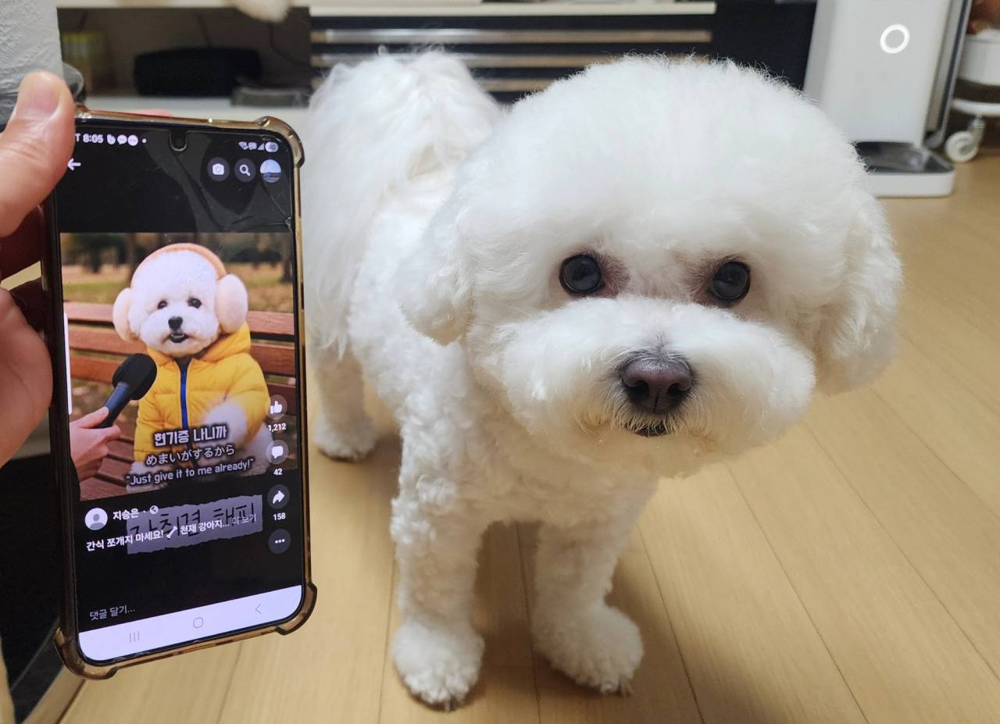
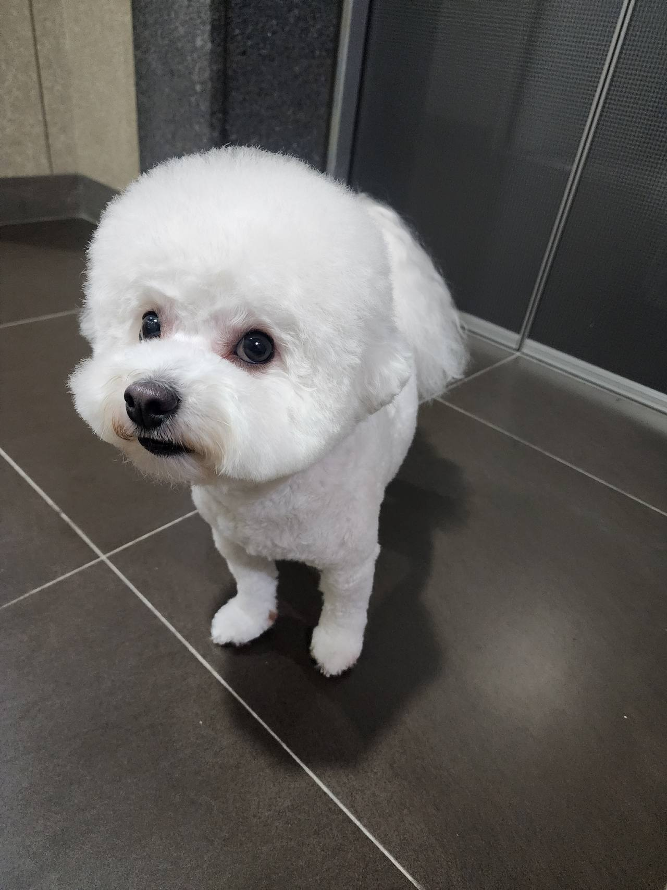

임신, 출산
출산 전후로돌보기 어렵거나아기와 함께 두기불안할 때
LOCAL GUIDE
반려인의 질병이나 고령화, 해외 이주 등 피치 못할 사유로 전주고양이입양보내기 상담을 요청하는 사례가 적지 않습니다. 아이에게 스트레스가 최소화되는 공간을 찾기 위해선 면밀한 소통과 점검이 필수적입니다. 보호실 여유 공간이 확보되지 않은 상태에서는 방문하셔도 접수가 불가하니 공간 현황을 먼저 점검하시기 바랍니다.
REHOMING
개인적인 사정으로 반려견과 더 이상 함께하기 어려운 상황일 때 체계적인 절차를 거쳐 아이를 입소시키고 무료 분양으로 보금자리를 이어 줍니다. 전화 상담(0505-707-0401)을 통해 현재 상황을 파악하며 무리한 수용 대신 여건에 맞춰 신중하게 돌봄을 시작합니다.
갑작스러운 환경 변화 속에서도 아이가 평온함을 잃지 않도록 세심하게 보살피며 다음 행보를 준비합니다. 이는 책임 있는 보호 속에서 아이에게 새로운 가족을 만날 기회를 열어 주는 과정입니다.
새로운 가족을 찾아 주는 일은아이에게 건넬 수 있는마지막 선물입니다.
출산 전후로돌보기 어렵거나아기와 함께 두기불안할 때

함께 살다동물 알러지가 나타나생활이 어려워졌을 때

해외로 데려갈 수 없거나이사한 집에서함께하기 어려울 때군 입대와 오랜 부재도같은 경우에 가깝습니다.

보호자가 아프거나연로해졌을 때아이도 나이가 들어집에서 돌보기 어려울 때
상담부터 입양 공고까지, 순서는 같습니다.

유선 상담을 통해 나이, 지역, 질병 유무와 특이 상황을 확인합니다. 센터 내부 공간을 종합적으로 살펴본 뒤 1차 입소 가능 여부를 결정합니다.

직접 센터로 방문하시거나 이동 지원 일정을 조율하여 선택합니다. 전국 어디든 전담 인력이 무상으로 픽업하여 이동을 돕습니다.

제반 확인 사항과 규정된 비용 조항을 면밀하게 검토합니다. 안내 내용을 충분히 숙지한 후 정식 입소 동의서를 작성합니다.

건강 상태와 함께 대형견, 소형견, 노령견 여부를 다각도로 살핍니다. 확인된 상태에 맞춰 아이가 안전하게 머물 전용 공간을 정합니다.

안정적인 생활 속에서 아이의 사진과 영상을 정성껏 촬영합니다. 새로운 인연을 맞이할 수 있도록 사전 자료를 차분히 정리합니다.

공식적인 입양 공고를 등록하여 아이의 다음 여정을 이끕니다. 적합한 보금자리를 찾아 새로운 가족과 따뜻하게 연결됩니다.
개별 일과와 성향 점검을 거쳐 생활 적응을 준비하고 있는 강아지 현황입니다.
양육 환경과 반려견의 성향이 부합하는지 점검하는 순서입니다.
주거 형태, 가족 구성원의 동의 여부, 돌봄 시간 등을 유선 상담을 통해 점검합니다.
보호소에 방문하여 개체의 건강 이력과 행동 특성을 확인하고 직접 대면 시간을 가집니다.
지속 양육에 관한 세부 항목을 확인하고 확인 서류를 작성한 뒤 가정을 이룹니다.
산책하고, 밥 먹고, 미용하는 보호소의 하루입니다. 사진을 누르면 그 이야기를 볼 수 있어요.
안내
아파트나 빌라가 밀집한 전주 주거 환경에서는 이웃 간의 마찰이나 층간 소음 문제로 인해 위탁 문의가 종종 발생합니다.
보호 환경과 입소 조건을 검토하고 계신다면 대표 번호 0505-707-0401 상담을 통해 전주고양이입양보내기 세부 절차를 파악해 보시기 바랍니다. 자리가 없으면 맡길 수 없다는 원칙을 지키고 있어 사전에 보호실 여유를 확인해야 헛걸음을 막을 수 있습니다. 상담 중에는 아이의 특이사항과 교정 필요 행동에 대해 투명하게 말씀해 주셔야 합니다.
새로운 환경을 찾는 과정에서 고양이의 문제 행동을 숨기는 것은 오히려 재입양을 어렵게 만드는 원인이 됩니다. 분리불안 증세, 특정 자극에 대한 헛짖음, 낯선 사람이나 물건에 대한 입질 성향 등은 가감 없이 투명하게 공유되어야 합니다.
아이의 성향을 정확히 파악해야 시설 내에서도 적절한 교정 교육을 병행할 수 있고, 이를 감당할 수 있는 준비된 가정으로 연계할 수 있습니다. 전주고양이입양보내기 접수 단계에서 작성하는 행동 평가표는 아이를 평가절하하기 위함이 아니라 진정한 행복을 찾아주기 위한 필수 데이터입니다.
안정화 과정을 마친 개체는 사진과 함께 실제 성격, 건강 상태, 어울리는 주거 환경이 상세히 담긴 공식 프로필로 등록됩니다. 이때 단순히 사진만 보고 입양을 희망하는 충동적 접근은 철저히 걸러냅니다.
예약금이나 선입금을 절대 요구하지 않으며, 직접 시설을 방문하여 아이와 충분히 교감한 후 서약서를 작성합니다. 전주 전주고양이입양보내기 운영팀은 새로운 입양 희망자의 주거 안정성과 가족 구성원의 동의 여부를 면밀히 심사합니다.
피치 못할 사정으로 눈물 속에 시설에 맡겨졌던 한 아이는 세심한 적응 프로그램과 행동 교정을 거쳐 훌륭한 새 가족을 만났습니다. 전 보호자가 성실하게 남겨준 건강 기록과 애착 물품 덕분에 아이는 분리불안 없이 빠르게 새 가정에 녹아들 수 있었습니다.
책임 있는 이별은 단순한 포기가 아니라 또 다른 사랑을 선물하는 배려 깊은 행동입니다. 전주고양이입양보내기 선택을 고민하고 계신다면, 혼자 자책하지 마시고 전문 상담원과의 소통을 통해 아이를 위한 최선의 미래를 설계해 주시기 바랍니다.
상담 없이 불쑥 찾아와 당일 무조건적인 인계를 요구하는 것은 시설 내 기존 개체들의 위생과 안전을 위협할 수 있습니다. 쾌적한 환경을 유지하려면 독립된 생활 공간과 검역 적응실의 공실 여부가 사전에 확인되어야 합니다.
자리가 부족한 상황이라면 대기 등록을 거쳐 안전한 자리가 확보된 후 입소 일정을 조율하게 됩니다. 전주고양이입양보내기 이용을 희망하시는 보호자께서는 유선으로 잔여 공간을 먼저 확인하신 뒤 방문 약속을 잡으셔야 헛걸음을 피할 수 있습니다.
파양을 결정하기 전, 현재 닥친 어려움이 일시적인 것인지 장기적으로 극복 불가능한 문제인지 면밀히 검토해야 합니다. 이사로 인한 반려동물 금지 주거지 이전, 심각한 알러지 발현, 급작스러운 중병, 해외 이주 등은 현실적으로 지속 양육을 가로막는 대표적 요인입니다.
방치나 유기라는 비극으로 치닫기 전에 현 상황을 솔직하게 마주하고 대안을 찾는 용기가 필요합니다. 전주 전주고양이입양보내기 안내는 보호자의 위기 상황을 공감하며 아이를 안전하게 보호할 수 있는 실질적인 방안을 제시합니다.
많은 분들이 정해진 일률적 금액을 궁금해하시지만, 비용은 아이의 나이, 품종, 묘종, 건강 상태, 질환 유무, 문제 행동 교정 필요성에 따라 개별적으로 산정됩니다. 따라서 유선 상으로 획일적인 고정가를 단정할 수 없으며 세부 상담을 거친 후 안내가 이루어집니다.
추가적인 진료나 접종, 중성화 수술의 필요 여부와 함께 시설에서 머무는 동안 소요되는 기초 보호 관리 비용이 복합적으로 반영됩니다. 전주고양이입양보내기 진행 전 전문 상담원과의 1:1 유선 대화를 통해 아이의 상태를 구체적으로 설명하시고 적합한 안내를 받으시기 바랍니다.
모든 아이들이 스트레스 없이 적응하기 위해서는 시설 내 쾌적한 독립 생활 공간이 확보되어 있어야 합니다. 무분별한 개체 수용은 환경 악화의 주원인이 되므로 잔여 공실을 철저히 관리하고 있습니다.
따라서 당일 즉시 입소를 확약하기보다는 공실 여부를 확인한 후 최적의 입소 일자를 조율하여 예약제로 운영합니다. 전주고양이입양보내기 희망일정에 맞춰 사전 예약을 완료하셔야 원활하고 안전한 인계 절차가 진행될 수 있습니다.
수년간 소중하게 기르던 고양이이었지만, 보호자의 급작스러운 희귀 질환 발병과 장기 입원, 혹은 해외 파견 및 이민으로 인해 더는 양육을 이어갈 수 없게 되는 안타까운 사연들이 많습니다. 홀로 남겨질 아이를 두고 매일 눈물로 밤을 지새우는 보호자들의 고뇌는 결코 가볍지 않습니다.
불가피한 현실의 벽에 부딪혔을 때 가장 중요한 것은 시간만 끌다가 최악의 방치 상태에 이르게 하지 않는 것입니다. 전주 전주고양이입양보내기 센터를 찾았던 한 보호자 역시 자신의 투병 생활 속에서 아이에게 더 나은 환경을 찾아주기 위해 용기 있는 선택을 내렸습니다.
서류 준비 및 방문 면담 일정 확정
보호 공간이 확보된 경우에 한하여 신분증 사본과 동물등록 말소 또는 변경 서류를 준비하고 일정을 잡습니다.
현장 방문 및 개체 대면 건강 확인
보호소에 직접 내방하여 육안 검진을 진행하고 아이의 심리 상태와 피모, 구강 상태를 최종 확인합니다.
기질 및 생활 습관 비대면 사전 평가
공격성, 분리불안, 짖음, 입질 여부 및 기존 배변 방식을 가감 없이 파악하여 보호 적합성을 평가합니다.
전주고양이입양보내기 상담 전화는 무엇인가요?입소 상담 전화는 0505-707-0401입니다. 전주이라고 해서 바로 맡길 수 있는 것은 아니고, 자리와 아이 상태를 먼저 확인합니다.
전주에 따로 적힌 보호소 주소가 있나요?전주고양이입양보내기 페이지는 전주 상담 안내입니다. 이 글에 없는 주소를 그 지역 지점이라고 안내하지 않습니다.
전화하면 바로 진행되나요?자리가 없거나 생활이 맞지 않으면 바로 진행되지 않습니다. 전화로 확인한 뒤 만남을 정합니다.
입소 절차를 밟으려면 비용은 어떻게 산정되고 안내받나요?아이의 품종, 연령, 만성 질환 유무, 건강 상태 및 교정 필요성에 따라 돌봄 비용이 상이하며 유선 면담을 통해 책정 기준을 투명하게 고지합니다.
당일 바로 방문해서 아이를 맡기는 것이 가능한가요?보호실 정원이 꽉 차 자리가 없으면 접수가 절대 불가하므로 반드시 사전에 전화로 공실 여부를 확인하고 일정을 조율해야 합니다.
입소한 이후 아이의 새로운 입양 공고는 어떻게 진행되나요?적응 기간을 거쳐 성격이 파악되면 보호소 공식 채널을 통해 개체 프로필을 게시하고 엄격한 입양 희망자 심사에 돌입합니다.
외모나 사진만 보고 위탁 및 보호 여부를 판단해도 괜찮은가요?사진만으로는 아이의 기질과 건강 상태를 온전히 파악할 수 없으므로 상세한 생활 기록 인계와 직접 대면 확인이 원칙입니다.





CONTACT
입양과 입소, 전국 어디서든 전화로 상담합니다.
전국 입소문의